9
860 fiches en français pour le niveau 9, prêtes à imprimer et avec corrigé.
860 ressources
Thème
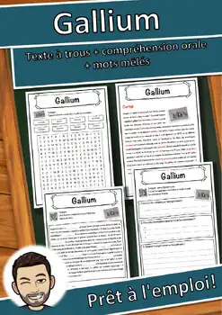
Gallium – Compréhension de lecture : texte à trous, écoute et mots mêlés
Fête de la Réformation – Texte à trous, compréhension orale et mots mêlés
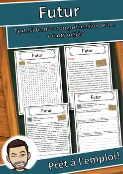
Futur – Compréhension de lecture : texte à trous, écoute et mots mêlés
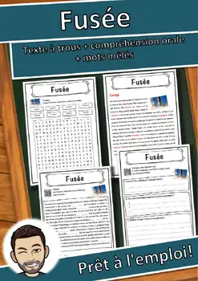
Fusée – Compréhension de lecture : texte à trous, écoute et mots mêlés
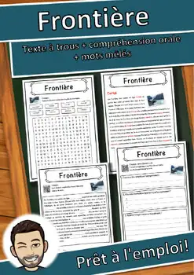
Frontière – Compréhension de lecture : texte à trous, écoute et mots mêlés
Fracturation hydraulique – Texte à trous, compréhension orale et mots mêlés
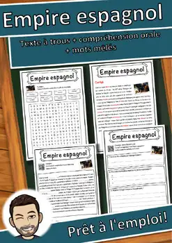
Empire espagnol – Compréhension de lecture : texte à trous, écoute et mots mêlés

Champigny-sur-Marne – Fiche : texte à trous, compréhension orale et mots mêlés
Francium – Compréhension de lecture : texte à trous, écoute et mots mêlés
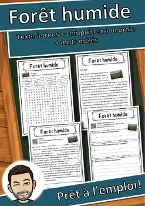
Forêt humide – Compréhension de lecture : texte à trous, écoute et mots mêlés
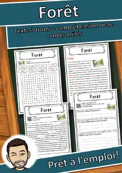
Forêt – Compréhension de lecture : texte à trous, écoute et mots mêlés
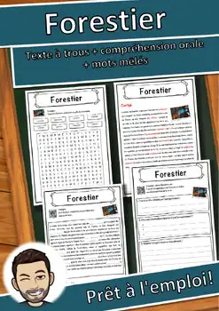
Forestier – Compréhension de lecture : texte à trous, écoute et mots mêlés
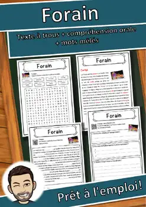
Forain – Compréhension de lecture : texte à trous, écoute et mots mêlés
Fonds des Nations unies pour l'enfance – Lecture, écoute et mots mêlés (FLS/FLE)
Flérovium – Compréhension de lecture : texte à trous, écoute et mots mêlés
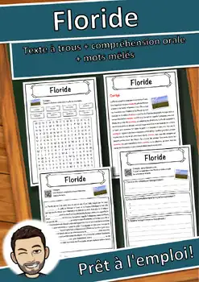
Floride – Compréhension de lecture : texte à trous, écoute et mots mêlés
Finlande – Compréhension de lecture : texte à trous, écoute et mots mêlés
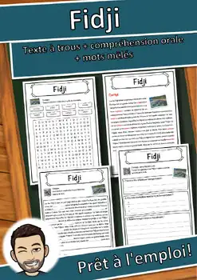
Fidji – Compréhension de lecture : texte à trous, écoute et mots mêlés
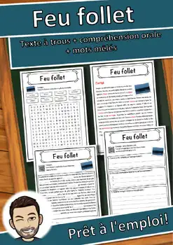
Feu follet – Compréhension de lecture : texte à trous, écoute et mots mêlés
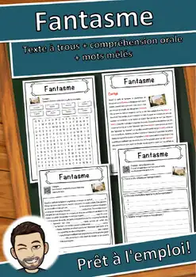
Fantasme – Compréhension de lecture : texte à trous, écoute et mots mêlés
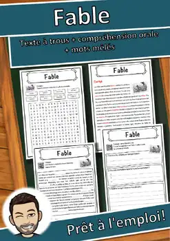
Fable – Compréhension de lecture : texte à trous, écoute et mots mêlés
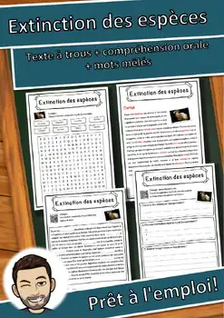
Extinction des espèces – Texte à trous, compréhension orale et mots mêlés
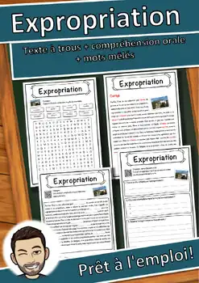
Expropriation – Compréhension de lecture : texte à trous, écoute et mots mêlés
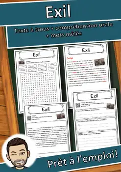
Exil – Compréhension de lecture : texte à trous, écoute et mots mêlés
Europium – Compréhension de lecture : texte à trous, écoute et mots mêlés
Eszett – Compréhension de lecture : texte à trous, écoute et mots mêlés
Esprit – Compréhension de lecture : texte à trous, écoute et mots mêlés
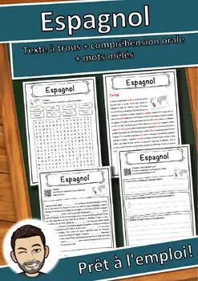
Espagnol – Compréhension de lecture : texte à trous, écoute et mots mêlés
Enns – Compréhension de lecture : texte à trous, écoute et mots mêlés
Element – Compréhension de lecture : texte à trous, écoute et mots mêlés
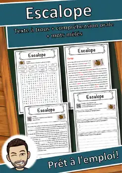
Escalope – Compréhension de lecture : texte à trous, écoute et mots mêlés
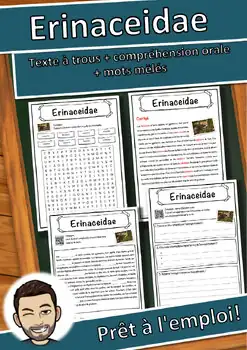
Erinaceidae – Compréhension de lecture : texte à trous, écoute et mots mêlés
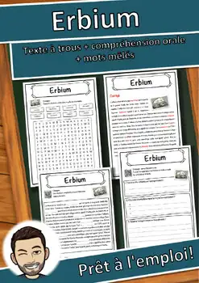
Erbium – Compréhension de lecture : texte à trous, écoute et mots mêlés
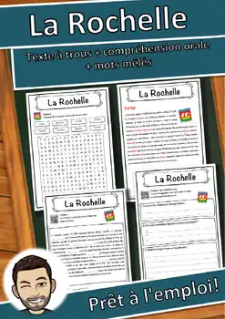
La Rochelle – Fiche : texte à trous, compréhension orale et mots mêlés
Enfance – Compréhension de lecture : texte à trous, écoute et mots mêlés
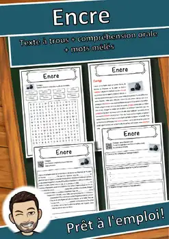
Encre – Compréhension de lecture : texte à trous, écoute et mots mêlés
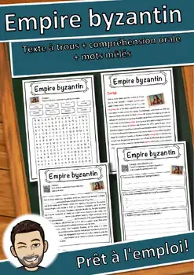
Empire byzantin – Compréhension de lecture : texte à trous, écoute et mots mêlés
Empire britannique – Texte à trous, compréhension orale et mots mêlés
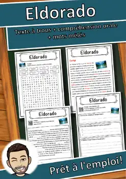
Eldorado – Compréhension de lecture : texte à trous, écoute et mots mêlés
Effets spéciaux – Compréhension de lecture : texte à trous, écoute et mots mêlés

Dépression – Compréhension de lecture : texte à trous, écoute et mots mêlés
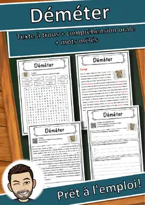
Déméter – Compréhension de lecture : texte à trous, écoute et mots mêlés
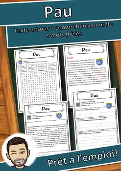
Pau – Fiche de géographie : texte à trous, compréhension orale et mots mêlés
Démocratie chrétienne – Texte à trous, compréhension orale et mots mêlés
Démocratie – Compréhension de lecture : texte à trous, écoute et mots mêlés

Droits de l'homme – Texte à trous, compréhension orale et mots mêlés
Droits de l'enfant – Texte à trous, compréhension orale et mots mêlés
Droit d'auteur dans les pays de common law – Fiche de lecture en français
Aucune ressource trouvée – essaie un autre mot ou un autre filtre.